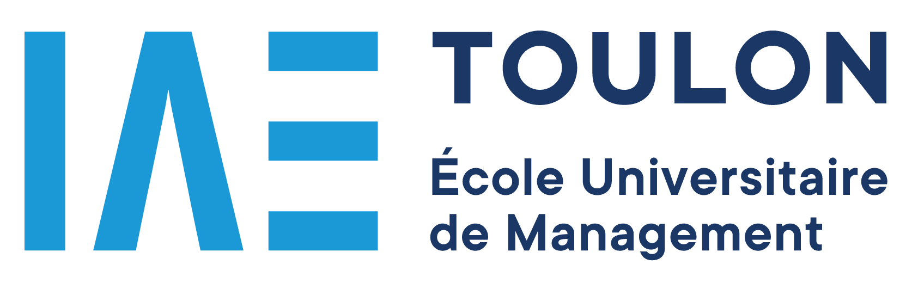
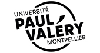
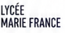
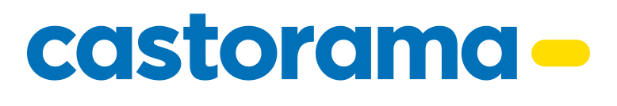
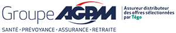
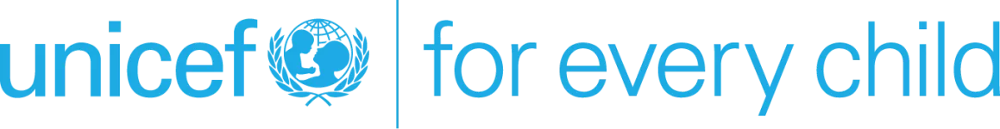

Se former
Acquérir des compétences techniques pour construire des solutions.
Mon parcours
Après plusieurs années dans les ressources humaines, j’ai choisi de me réorienter vers le développement pour combiner ma compréhension des besoins métiers avec la création de solutions concrètes.
Aujourd’hui, j’apprends à développer des outils qui simplifient les processus, améliorent l’expérience utilisateur et répondent à des problématiques réelles.
Acquérir des compétences techniques pour construire des solutions.
Des compétences humaines et organisationnelles solides.
Des projets concrets à la croisée de la tech et des besoins réels.
01 Formations
Depuis 2026
Epitech Paris
Pré-MSc depuis septembre 2026 ; MSc Cloud & DevOps prévu. Développement logiciel et technologies du numérique.
En cours2020 – 2021

Université de Toulon
Spécialisation en gestion des talents, droit social et stratégie RH.
2019 – 2020

Université Paul-Valéry Montpellier 3
Approfondissement des enjeux RH et du management.
2018 – 2019
Université de Toulon
Parcours Management général : économie, gestion et management.
2016 – 2018

Lycée Marie France · Toulon
Spécialisation en services bancaires et relation client.
02 Expériences professionnelles

2023 – 2025 · CDI · La Garde
Une expérience enrichissante au sein d’une grande enseigne où j’ai évolué dans un environnement dynamique et exigeant.
Compétences développées
2021 – 2022 · Alternance puis CDD · Signes
Une expérience au sein d’une entreprise internationale qui m’a permis de développer ma capacité d’analyse et ma polyvalence.
Compétences développées

2021 · Stage · 6 mois · Toulon
Une première expérience ciblée sur le recrutement qui m’a permis de renforcer mon sens de l’écoute et ma capacité à travailler en mode projet.
Compétences développées

2016 – 2020 · Plusieurs agences · Var
Des expériences qui m’ont permis de développer un excellent sens du relationnel et une grande capacité d’adaptation.
Compétences développées

UNICEF du Var · Toulon
Organisation d’événements, recherche de partenariats, recrutement de bénévoles, trésorerie et communication numérique.
Compétences développées
03 Transition
Mon expérience en RH et en banque m’a appris à analyser des situations complexes et à identifier les vrais besoins.
J’ai l’habitude de travailler avec des données, d’organiser des processus et de construire des outils de suivi.
Aujourd’hui, je développe des applications qui simplifient la gestion, améliorent l’expérience utilisateur et répondent à des problématiques réelles.
Gestion des variables de paie via ADP, suivi des anomalies, administration des dossiers salariés, visites médicales et affiliations mutuelle. Gestion des intérimaires, plannings, présences et formations ; participation à la préparation des élections du CSE et suivi AT/MP.
Entrées et sorties France/export, avenants contractuels, visites médicales et mutuelle. Tableaux de bord et extraction de données RH, éléments variables de paie, congés, absences et échanges avec les collaborateurs.
Sourcing sur les jobboards, rédaction et publication des offres, tri des candidatures, présélections téléphoniques et planification des entretiens. Contribution aux projets handicap, alternance et marque employeur.
Ces missions expliquent les compétences humaines présentées dans la chronologie, sans les confondre avec les compétences techniques développées à Epitech.